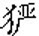

从崇轩先生的通信[544]（二月份《京报副刊》）里，知道他在轮船上听到两个旅客谈话，说是杭州雷峰塔之所以倒掉，是因为乡下人迷信那塔砖放在自己的家中，凡事都必平安，如意，逢凶化吉，于是这个也挖，那个也挖，挖之久久，便倒了。一个旅客并且再三叹息道：西湖十景这可缺了呵！
这消息，可又使我有点畅快了，虽然明知道幸灾乐祸，不像一个绅士，但本来不是绅士的，也没有法子来装潢。
我们中国的许多人，——我在此特别郑重声明：并不包括四万万同胞全部！——大抵患有一种“十景病”，至少是“八景病”，沉重起来的时候大概在清朝。凡看一部县志，这一县往往有十景或八景，如“远村明月”“萧寺清钟”“古池好水”之类。而且，“十”字形的病菌，似乎已经侵入血管，流布全身，其势力早不在“！”形惊叹亡国病菌[545]之下了。点心有十样锦，菜有十碗，音乐有十番[546]，阎罗有十殿，药有十全大补，猜拳有全福手福手全，连人的劣迹或罪状，宣布起来也大抵是十条，仿佛犯了九条的时候总不肯歇手。现在西湖十景可缺了呵！“凡为天下国家有九经”[547]，九经固古已有之，而九景却颇不习见，所以正是对于十景病的一个针砭，至少也可以使患者感到一种不平常，知道自己的可爱的老病，忽而跑掉了十分之一了。
但仍有悲哀在里面。
其实，这一种势所必至的破坏，也还是徒然的。畅快不过是无聊的自欺。雅人和信士和传统大家，定要苦心孤诣巧语花言地再来补足了十景而后已。
无破坏即无新建设，大致是的；但有破坏却未必即有新建设。卢梭，斯谛纳尔，尼采，托尔斯泰，伊孛生等辈，若用勃兰兑斯的话来说，乃是“轨道破坏者”。其实他们不单是破坏，而且是扫除，是大呼猛进，将碍脚的旧轨道不论整条或碎片，一扫而空，并非想挖一块废铁古砖挟回家去，预备卖给旧货店。中国很少这一类人，即使有之，也会被大众的唾沫淹死。孔丘[548]先生确是伟大，生在巫鬼势力如此旺盛的时代，偏不肯随俗谈鬼神；但可惜太聪明了，“祭如在祭神如神在”，只用他修《春秋》的照例手段以两个“如”字略寓“俏皮刻薄”之意[549]，使人一时莫明其妙，看不出他肚皮里的反对来。他肯对子路赌咒，却不肯对鬼神宣战，因为一宣战就不和平，易犯骂人——虽然不过骂鬼——之罪，即不免有《衡论》（见一月份《晨报副镌》）作家TY先生似的好人，会替鬼神来奚落他道：为名乎？骂人不能得名。为利乎？骂人不能得利。想引诱女人乎？又不能将蚩尤的脸子印在文章上。[550]何乐而为之也欤？
孔丘先生是深通世故的老先生，大约除脸子付印问题以外，还有深心，犯不上来做明目张胆的破坏者，所以只是不谈，而决不骂，于是乎俨然成为中国的圣人，道大，无所不包故也。否则，现在供在圣庙里的，也许不姓孔。
不过在戏台上罢了，悲剧将人生的有价值的东西毁灭给人看，喜剧将那无价值的撕破给人看。讥讽又不过是喜剧的变简的一支流。但悲壮滑稽，却都是十景病的仇敌，因为都有破坏性，虽然所破坏的方面各不同。中国如十景病尚存，则不但卢梭他们似的疯子决不产生，并且也决不产生一个悲剧作家或喜剧作家或讽刺诗人。所有的，只是喜剧底人物或非喜剧非悲剧底人物，在互相模造的十景中生存，一面各各带了十景病。
然而十全停滞的生活，世界上是很不多见的事，于是破坏者到了，但并非自己的先觉的破坏者，却是狂暴的强盗，或外来的蛮夷。

狁[551]早到过中原，五胡[552]来过了，蒙古也来过了；同胞张献忠[553]杀人如草，而满洲兵的一箭，就钻进树丛中死掉了。有人论中国说，倘使没有带着新鲜的血液的野蛮的侵入，真不知自身会腐败到如何！这当然是极刻毒的恶谑，但我们一翻历史，怕不免要有汗流浃背的时候罢。外寇来了，暂一震动，终于请他作主子，在他的刀斧下修补老例；内寇来了，也暂一震动，终于请他做主子，或者别拜一个主子，在自己的瓦砾中修补老例。再来翻县志，就看见每一次兵燹之后，所添上的是许多烈妇烈女的氏名。看近来的兵祸，怕又要大举表扬节烈了罢。许多男人们都那里去了？凡这一种寇盗式的破坏，结果只能留下一片瓦砾，与建设无关。
但当太平时候，就是正在修补老例，并无寇盗时候，即国中暂时没有破坏么？也不然的，其时有奴才式的破坏作用常川活动着。
雷峰塔砖的挖去，不过是极近的一条小小的例。龙门的石佛[554]，大半肢体不全，图书馆中的书籍，插图须谨防撕去，凡公物或无主的东西，倘难于移动，能够完全的即很不多。但其毁坏的原因，则非如革除者的志在扫除，也非如寇盗的志在掠夺或单是破坏，仅因目前极小的自利，也肯对于完整的大物暗暗的加一个创伤。人数既多，创伤自然极大，而倒败之后，却难于知道加害的究竟是谁。正如雷峰塔倒掉以后，我们单知道由于乡下人的迷信。共有的塔失去了，乡下人的所得，却不过一块砖，这砖，将来又将为别一自利者所藏，终究至于灭尽。倘在民康物阜时候，因为十景病的发作，新的雷峰塔也会再造的罢。但将来的运命，不也就可以推想而知么？如果乡下人还是这样的乡下人，老例还是这样的老例。
这一种奴才式的破坏，结果也只能留下一片瓦砾，与建设无关。
岂但乡下人之于雷峰塔，日日偷挖中华民国的柱石的奴才们，现在正不知有多少！
瓦砾场上还不足悲，在瓦砾场上修补老例是可悲的。我们要革新的破坏者，因为他内心有理想的光。我们应该知道他和寇盗奴才的分别；应该留心自己堕入后两种。这区别并不烦难，只要观人，省己，凡言动中，思想中，含有借此据为己有的朕兆者是寇盗，含有借此占些目前的小便宜的朕兆者是奴才，无论在前面打着的是怎样鲜明好看的旗子。
一九二五年二月六日。
注 释
[543] 本篇最初发表于1925年2月23日《语丝》周刊第十五期。
[544] 崇轩的通信 指刊登于1925年2月2日《京报副刊》第四十九号上的胡崇轩给编者孙伏园的信《雷峰塔倒掉的原因》。信中有如下一段话：“那雷峰塔不知在何时已倒掉了一半，只剩着下半截，很破烂的，可是我们那里的乡下人差不多都有这样的迷信，说是能够把雷峰塔的砖拿一块放在家里必定平安，如意，无论什么凶事都能够化吉，所以一到雷峰塔去观瞻的乡下人，都要偷偷的把塔砖挖一块带家去，——我的表兄曾这样做过的，——你想，一人一块，久而久之，那雷峰塔里的砖都给人家挖空了，塔岂有不倒掉的道理？现在雷峰塔是已经倒掉了，唉，西湖十景这可缺了啊！”胡崇轩，即胡也频（1903—1931），福建福州人，当时是《京报》附刊《民众文艺》周刊的编者之一。
[545] 亡国病菌 当时的一种离奇的论调。1924年4月《心理》杂志第三卷第二号载有张耀翔（北京师范大学教授）的《新诗人的情绪》一文，把当时出版的一些新诗集里的惊叹号（！）加以统计，说这种符号“缩小看像许多细菌，放大看像几排弹丸”，认为这是消极、悲观、厌世等情绪的表示，因而说多用惊叹号的白话诗都是“亡国之音”。
[546] 十番 又称“十番鼓”、“十番锣鼓”，由若干曲牌与锣鼓段连缀而成的一种套曲。流行于福建、江苏、浙江等地。据清代李斗《扬州画舫录》卷十一记：十番鼓是用笛、管、箫、弦、提琴、云锣、汤锣、木鱼、檀板、大鼓等十种乐器更番合奏。
[547] “凡为天下国家有九经” 语出《中庸》：“凡为天下国家有九经。曰：修身也，尊贤也，亲亲也，敬大臣也，体群臣也，子庶民也，来百工也，柔远人也，怀诸侯也。”意思是治理天下国家有九项应做的事。这里只取“经”“景”两字同音。
[548] 孔丘（前551—前479） 春秋时鲁国陬邑（今山东曲阜）人，儒家学派的创始人。《论语·述而》记载：“子不语怪力乱神。”“祭如在祭神如神在”，语出《论语·八佾》：“祭如在，祭神如神在。”是记述孔子的祭祀态度的话，意思是孔子祭祀祖先和神灵时，好像受祭者真的就在面前。宋邢昺疏：前句“言事死如事生也”；后句“谓祭百神亦如神之存在而致敬也。”孔子曾修订过《春秋》，后来的经学家认为他用一字褒贬表示微言大义，称为“春秋笔法”。他对弟子子路赌咒的事，见《论语·雍也》：“子见南子，子路不说（悦）。夫子矢之曰：‘予所否者，天厌之！天厌之！’”按南子是卫灵公的夫人。
[549] “俏皮刻薄” 1921年1月12日《京报副刊》发表的尚惜凡的《〈语丝〉的作风》一文中说：“我觉得《语丝》文章的作风有点‘尖刻’、‘俏皮’之味。”鲁迅这里顺便予以讽刺。
[550] 《衡论》 发表在1925年1月18日《晨报副刊》第十二号上的一篇文章，作者署名TY。它反对写批评文章，其中有这样的话：“这种人（按指写批评文章的人），真不知其心何居。说是想赚钱吧，有时还要赔子儿去出版。说是想引诱女人吧，他那朱元璋的脸子也没有印在文章上。说是想邀名吧，别人看见他那尖刻的文章就够了，谁还敢相信他？”这里是鲁迅对该文的顺笔讽刺。
[551] 狁 我国古代北方民族之一，周代称狁，秦汉时称匈奴。周成王、宣王时都曾和他们有过战争。
[552] 五胡 历史上对匈奴、羯、鲜卑、氐、羌五个少数民族的合称。参看本卷第230页注〔9〕。
[553] 张献忠（1606—1646） 延安柳树涧（今陕西定边东）人，明末农民起义领袖。崇祯三年（1630）起义，转战陕、豫各地；崇祯十七年（1644）入川，在成都建立大西国；清顺治三年（1646）出川，行至川北盐亭界，猝遇清兵，于凤凰坡中箭坠马而死。旧史书（包括野史和杂记）中多有关于他杀人的记载。
[554] 龙门的石佛 龙门，山名，在河南洛阳南。从北魏至唐代，信仰佛教的人在崖壁间镌石成佛像，约九万七千余尊。